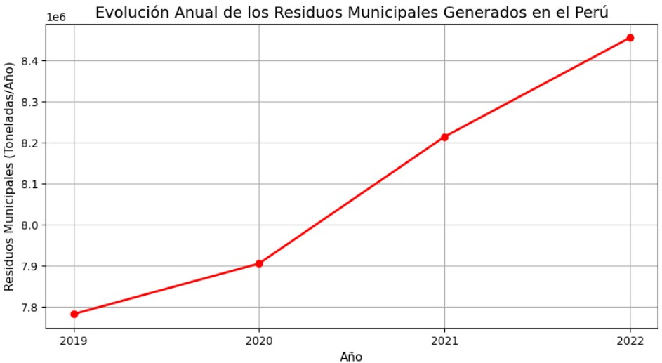
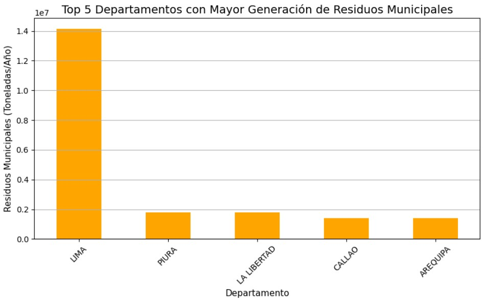
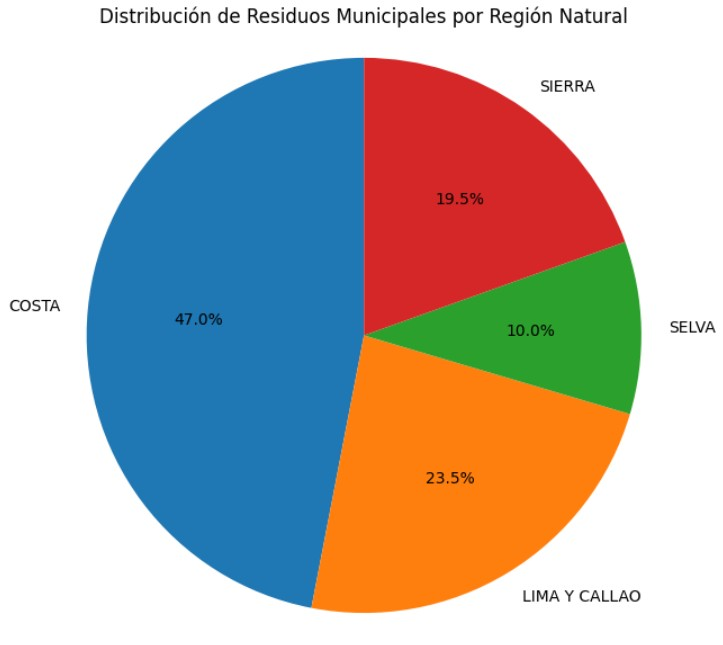
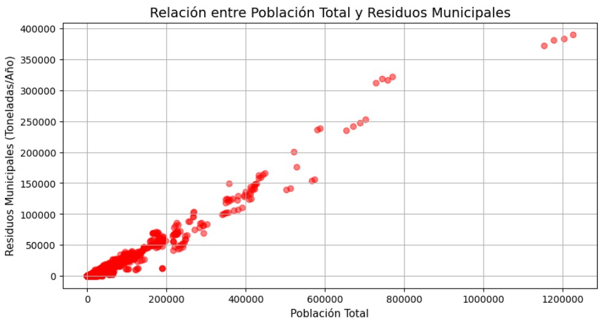
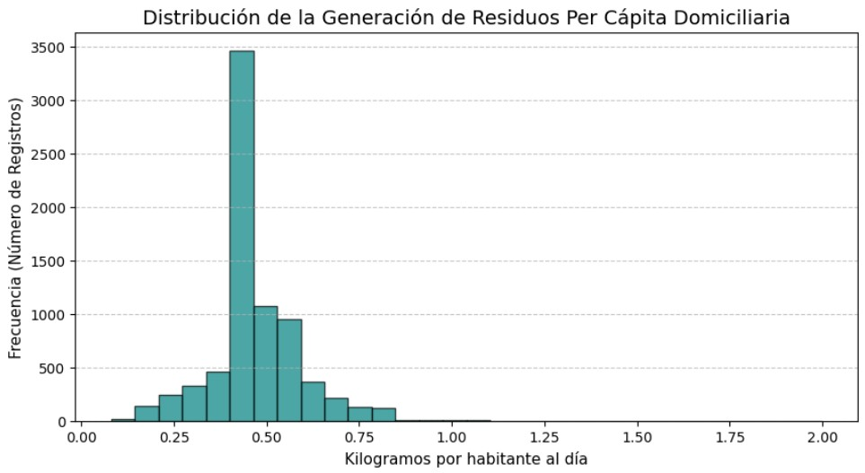

Análisis de datos · Google Colab
¿Por qué clasificar
residuos en el Perú?
El siguiente análisis utiliza datos históricos del MINAM para demostrar el crecimiento sostenido de residuos municipales en el país. Estos gráficos, generados con Python y Matplotlib, justifican la necesidad de un sistema inteligente de clasificación de residuos sólidos.
Gráficos generados en Colab

Evolución anual de residuos municipales (2019–2022)
La tendencia es clara: la generación de residuos municipales en el Perú ha crecido cada año sin excepción. Pasando de aproximadamente 7.8 millones a 8.5 millones de toneladas anuales, la curva ascendente confirma que el problema no se detiene por sí solo y requiere soluciones activas como la clasificación correcta en la fuente.

Top 5 departamentos con mayor generación
Lima acumula una cantidad de residuos que supera por amplio margen a cualquier otro departamento, siendo casi 8 veces mayor que el segundo lugar. Le siguen Piura, La Libertad, Callao y Arequipa. Esta concentración evidencia la necesidad urgente de infraestructura de reciclaje en las zonas urbanas más pobladas del país.

Distribución por región natural
La región Costa concentra casi la mitad (47%) de todos los residuos municipales generados en el país. Lima y Callao suman un 23.5% adicional, lo que significa que las zonas costeras representan más del 70% del total. La Sierra aporta el 19.5% y la Selva tan solo el 10%, a pesar de ser la región geográficamente más extensa.

Relación entre población y residuos
Existe una correlación positiva muy marcada: a mayor población total de un distrito o municipio, mayor es la cantidad de residuos generados. Esto confirma que el crecimiento demográfico sostenido del Perú irá de la mano con un aumento proporcional de residuos, haciendo que la gestión inteligente sea cada vez más crítica.

Generación per cápita domiciliaria
La mayoría de registros se concentra alrededor de 0.45 kg por habitante al día, con una distribución sesgada hacia la derecha que indica la existencia de zonas con generación considerablemente más alta. Conocer este dato per cápita es fundamental para diseñar campañas de reducción y sistemas de clasificación adaptados a la realidad de cada localidad.
Conclusión del análisis: Los datos demuestran que el Perú genera millones de toneladas de residuos por año y la tendencia es creciente. Sin una clasificación adecuada en la fuente, la mayor parte de estos residuos termina en rellenos sanitarios o botaderos. Un clasificador inteligente de residuos sólidos como el desarrollado en este proyecto representa una solución directa y escalable para este problema.